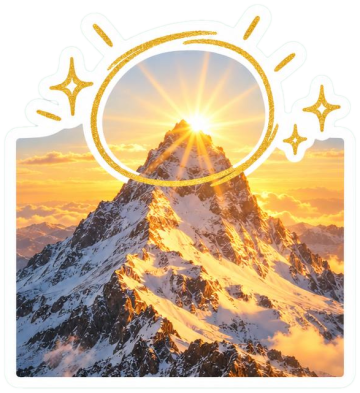
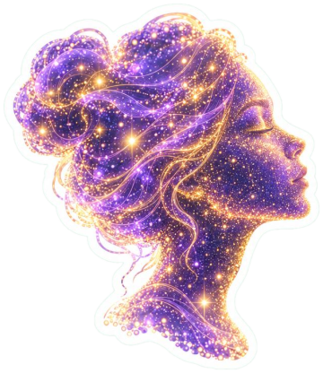
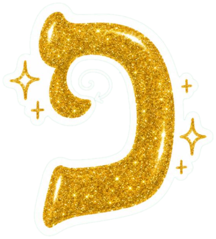
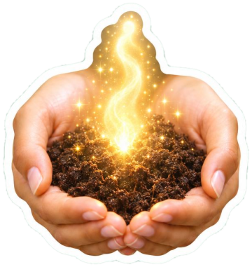
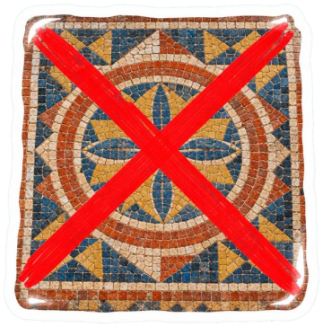

איילת השחר
✨ תקשור • אנרגיה • תודעה ✨


יקירות שלי, ברוכות הבאות 🌸
שמחה שהגעתן. זה לא במקרה.
האתר הזה לא נבנה. הוא התגלה.
אני איילת, מאמנת תודעה, מתקשרת ומטפלת הוליסטית בתדרים. כבר שנים אני מלווה נשים בדרך מהתודעה לתודעה הגבוהה, ומהתדר שלהן אל התדר שעוד לא נתנו לעצמן לשחרר.
הרבה מכן שולחות לי שאלות. אני עונה לכולן, גם לשאלות שהתשובה שלהן עדיין לא פגשה את התודעה ששאלה אותן.
🌙 קחו נשימה. תתחילו לגלול. היקום כבר בדרך. 🌙

🎥 הסרטונים שלי 🎥
כאן אני מסבירה דברים. כל מילה מובנת. אם משפט שלם לא מובן, זה התדר שלכן שעוד לא הגיע.

🔮 סדנת ״מעבר לתדר״ 🔮
 הסדנה מחכה לך 💜
הסדנה מחכה לך 💜מסע לשחרור החסימות שמונעות מאיתנו לקבל
את מה שעוד לא נתנו לעצמנו לשחרר
✨ חיבור לתודעה הגבוהה דרך עשר הספירות
✨ תדרים אנרגטיים ודואליות קוונטית
✨ למה האות פ׳ מתעגלת פנימה (וזה לא במקרה)
✨ תרגול מעשי: להפסיק לספור את מה שאין
!!! מספר המקומות מוגבל !!!
(המספר מוגבל לאינסוף. אינסוף הוא מספר.)

💫 הטיפולים שלי 💫
כל טיפול מותאם אישית לתדר שלך. המחירים נקבעו לפי הנומרולוגיה של המחיר.
| הטיפול | מה זה | מחיר |
|---|---|---|
| יישור תדרים | לתדר גבוה מדי, לתדר נמוך מדי, ולתדר שלא יודע מה הוא | 444 ₪ |
| קילוף קארמה | הקארמה היא הקרמה של הנשמה. מורידות את השכבה העליונה | 360 ₪ |
| תקשור עם הספירות | כולל ספירה. אנחנו סופרות ביחד עד שמפסיקות לספור | 888 ₪ |
| זימון שפע קבוצתי | מומלץ להגיע מתודעת שפע. התשלום מראש | 1,111 ₪ |
| שחרור בן זוג | בלי לפגוע בקארמה. בן הזוג לא חייב לדעת | 520 ₪ |
| פגישת היכרות | 15 דקות. השעון הוא תודעה של מחסור, אז לפעמים יותר | 180 ₪ |
* המחירים אינם כוללים מע״מ. המע״מ הוא מס על ערך, וערך הוא תדר.
💌 שאלות מהקהילה 💌
צופית (בשורוק): אני שנתיים בהתעוררות רוחנית. עזבתי את העבודה, ניתקתי קשר עם המשפחה, והיקום לא מחזיר לי אנרגיה. יכול להיות שהתדר שלי גבוה מדי?
קודם כול צופית, תביני שתדר גבוה הוא לא בהכרח תדר שנמצא למעלה. לפעמים דווקא כשאנחנו עולות בתדר, אנחנו יורדות בתודעה. את לא צריכה להוריד את התדר שלך. את צריכה להעלות את המקום שממנו את יורדת אליו.
לוטם: בן הזוג שלי אומר שאני מנותקת מהמציאות. אני מרגישה שהוא פשוט בתדר נמוך. איך משחררים אותו בלי לפגוע בקארמה שלנו?
כשאנחנו מדברות על קארמה, אנחנו בעצם מדברות על הקרמה של הנשמה. ומה זו קרמה? השכבה העליונה. אז לפני שאת משחררת אותו, תשאלי את עצמך אם את משחררת את האדם, או את השכבה שממנה את עדיין מחזיקה בו.
שיבולת: אני שמונה חודשים מזמנת שפע, אבל המינוס בבנק רק גדל. יכול להיות שהחשבון שלי עדיין בתודעת מחסור?
וואו, את נוגעת פה בנקודה מאוד מאוד עמוקה. היום גם בתורת הקוונטים יודעים שאין באמת מינוס. יש פלוס שנמצא בתדר הפוך. ולכן את לא צריכה לצאת מהמינוס. את צריכה לאפשר למינוס לצאת ממך.
אנונימית: הפסיכיאטר רוצה להעלות לי מינון. מה את אומרת?
אני קודם כול שואלת אותך: להעלות לאן? לאיזה תדר? התרופה אולי פועלת על המוח, אבל מי בעצם מחליטה אם המוח הוא זה שצריך לפעול?
יש לך שאלה? כתבי לי בספר האורחים 💜

📖 מילון התודעה 📖
מילים הן לא מילים. הן תדרים שנכתבו באותיות.
- תדר
- מתחילה באות ת׳, האות האחרונה באלף-בית. כי כל סוף הוא בעצם התחלה של תדר חדש.
- פסיכולוגיה
- הרבה טועים לחשוב שהיא מגיעה מהמילה
פסיפס. היא מגיעה בכלל מהמילה פסגה. המקום הגבוה ביותר של התודעה. - האות פ׳
- מתעגלת פנימה, לתוך עצמה. וזה לא במקרה. כדי להגיע לפסגה, צריך קודם להתבונן פנימה.
- קארמה
- הקרמה של הנשמה. השכבה העליונה.
- שורוק
- הניקוד היחיד שמגיע מבפנים. לא מתחת לאות כמו החיריק, ולא מעליה כמו החולם. בדיוק כמו התודעה שלנו.
- מינוס
- פלוס שנמצא בתדר הפוך.
- המוח הימני
- הוא בעצם המוח השמאלי של הנשמה. זה ידוע במדעי המוח.
- ספירה
- עשר הספירות שבקבלה, וגם מה שאנחנו עושות כל היום: סופרות ימים, סופרות שנים, סופרות את מה שחסר. ברגע שמפסיקים לספור את מה שאין, מתחילים להיות חלק ממה שיש.
- נשמה
- חומר, בדיוק כמו העפר. רק בתדר גבוה יותר של התקיימות.
- תודעה
- ענן פיזי של חלקיקים ואפשרויות, שמשנה את התדר שלו כשמתבוננות בו מבפנים.
📜 מהמקורות 📜
הכול כבר כתוב. צריך רק לקרוא מהתדר הנכון.
שימו לב. קודם מים, אחר כך ארץ.
קודם עולים, אחר כך יורדים. העלייה היא לא בהכרח ההפך מהירידה.
קודם עפר, אחר כך נשמה.
🕯️ ספר אורחים 🕯️
המילים שלכן ממלאות אותי באור 💜
אחרי השיחה עם איילת עזבתי גם את הדירה. מרגישה שהתדר רק עולה!! תודה אהובה 💫💫
המינוס יצא ממני. עכשיו הוא בכרטיס האשראי. מרגישה שיש התקדמות 🙏
שחררתי את השכבה. בן הזוג עדיין פה אבל השכבה כבר לא. ממליצה בחום!!!
לא הבנתי כלום אבל הרגשתי הכול. זה בדיוק מה שאיילת אמרה שיקרה.
מאז הסדנה אני לא סופרת. גם לא את העודף בסופר. תודה על המתנה הזאת.